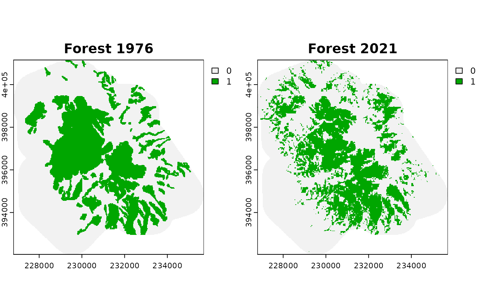
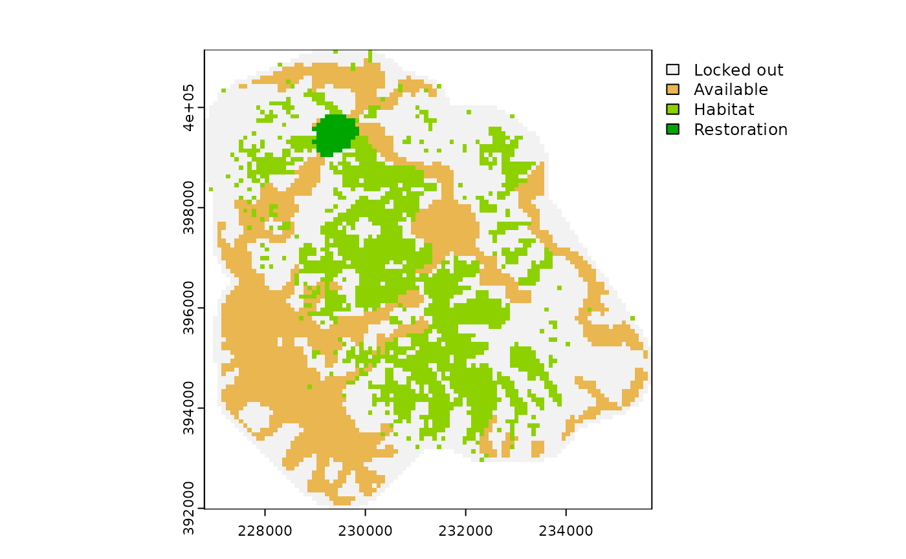
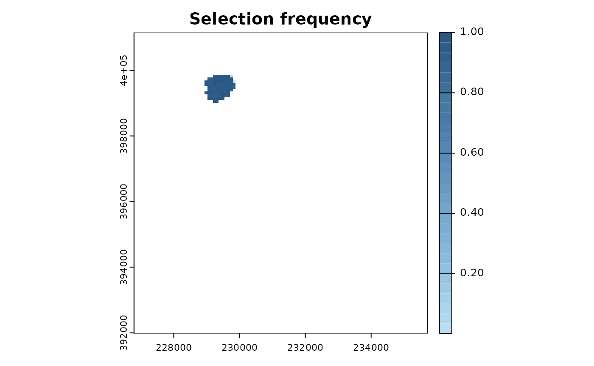

Case study: using historical data to set ecological restoration targets
Source:vignettes/case_study.Rmd
case_study.RmdHistorical landscape data is useful to assess habitat loss, increase in habitat fragmentation, or decrease in ecological connectivity. Using restoptr, it is possible to take advantage of such historical data to define ecological restoration targets based on the past state of a landscape. In New Caledonia, many vegetation areas are threatened by mining activity, which is the pillar of the archipelago’s economy. In this case study, we specifically focused on a mining area located in the north of the main island of New Caledonia, the Mount Kaala. In this area, aerial images from 1976 and 2021 are freely distributed by the Government of New Caledonia. Forest areas in 1976 were digitized manually, and forest areas in 2021 were digitized using an automated method based on the historical analysis of temporal series from Landsat data (Vancutsem et al. 2021), both at a resolution of 30 m x 30 m. This data is included as an example dataset in the restoptr package.
# load packages
library(restoptr)
library(terra)
# load habitat data
forest_1976 <- rast(system.file(
"extdata", "case_study", "forest_1976.tif",
package = "restoptr"
))
forest_2021 <- rast(system.file(
"extdata", "case_study", "forest_2021.tif",
package = "restoptr"
))
# visualize habitat data
plot(rast(list(forest_1976, forest_2021)),
main=c("Forest 1976", "Forest 2021"),
nc=2)
In this case study, we will use an aggregation factor of 3, which corresponds to planning units of 90 m x 90 m according to our input maps. This aggregation factor will ensure a good trade-off between spatial resolution and computational tractability. The habitat threshold parameter, set to 0.75 in this case study, indicates that a planning unit is considered as habitat if it contains at least 75% of habitat. To define restoration targets based on the evolution of the landscape between 1976 and 2021, we need to produce the aggregated rasters and evaluate their landscape metrics. To do so, we use restoptr’s preprocessing toolchain.
# produce aggregated data
forest_1976_aggr <- preprocess_input(forest_1976,
aggregation_factor = 3,
habitat_threshold = 0.75)$existing_habitat
forest_2021_aggr <- preprocess_input(forest_2021,
aggregation_factor = 3,
habitat_threshold = 0.75)$existing_habitat
# visualize aggregated data
plot(rast(list(forest_1976_aggr, forest_2021_aggr)),
main=c("Forest 1976 (aggr.)", "Forest 2021 (aggr."),
nc=2)Now, we use the landscapemetrics package to assess the habitat loss and the increase in fragmentation between 1976 and 2021. The habitat loss is measured using the input 30 m x 30 m raster, because restoptr preprocessing toolchain preserves the habitat area. However, the fragmentation is measured at the aggregated level with the effective mesh size index (Jaeger 2000), which value is impacted by the aggregation factor and the habitat threshold.
library(landscapemetrics)
forest_area_1976 <- lsm_c_ca(forest_1976)
forest_area_1976 <- forest_area_1976[forest_area_1976$class == 1, ]$value
forest_area_2021 <- lsm_c_ca(forest_2021)
forest_area_2021 <- forest_area_2021[forest_area_2021$class == 1, ]$value
cat("Evolution of forest area between 1976 and 2021 : ",
forest_area_2021 - forest_area_1976, "ha")## Evolution of forest area between 1976 and 2021 : -165.03 ha
mesh_1976 <- lsm_c_mesh(forest_1976_aggr, directions = 4)
mesh_1976 <- mesh_1976[mesh_1976$class == 1, ]$value
mesh_2021 <- lsm_c_mesh(forest_2021_aggr, directions = 4)
mesh_2021 <- mesh_2021[mesh_2021$class == 1, ]$value
cat("Evolution of MESH betwee 1976 and 2021 : ", mesh_2021 - mesh_1976, "ha")## Evolution of MESH betwee 1976 and 2021 : -30.98568 haAs we can see, the forest area decreased and the fragmentation increased between 1976 and 2021 (the higher MESH is, the lower the fragmentation is). Our objective is thus to identify restoration plans that (i) is located in accessible areas (150 m buffer around tracks); (ii) is connected and compact (does not exceed a diameter of 920 m); (iii) restores the fragmentation level measured in 1976; and (iv) is at minimal cost (measured in surface units to restore).
First, we create a restopt problem with our input data:
problem <- restopt_problem(existing_habitat = forest_2021,
habitat_threshold = 0.75,
aggregation_factor = 3)- We add a constraint to this problem which specifies which planning units are available for restoration actions. The available areas are defined as a 150 m buffer around tracks, which is included in the package example dataset.
available <- vect(system.file(
"extdata", "case_study", "available.gpkg", package = "restoptr"
))
problem <- problem %>%
add_available_areas_constraint(available)- We add a connected and a compactness constraint. The connected constraint ensures that the restoration plan is spatially continuous. The compactness constraint ensures that the restoration area is within an enclosing circle whose maximum diameter is 920 m (in our case), thus the maximum geographic distance between any two planning units in the solution cannot exceed 920 m.
problem <- problem %>%
add_connected_constraint() %>%
add_compactness_constraint(max_diameter = 920, unit = "m")- We add a minimum mesh constraint to ensures that the restoration plan will restore, at least, the fragmentation level observed in 1976.
problem <- problem %>%
add_min_mesh_constraint(min_mesh = mesh_1976, unit = "ha")- We set a min restore objective to identify the minimum cost restoration plans, with the cost measured as the area restored.
problem <- problem %>%
set_min_restore_objective()We can get a summary of the restopt problem by printing it.
print(problem)## -----------------------------------------------------------------
## Restopt
## -----------------------------------------------------------------
## original habitat: forest_2021.tif
## aggregation factor: 3
## habitat threshold: 0.75
## existing habitat: in memory
## restorable habitat: in memory
## -----------------------------------------------------------------
## objective: Minimize restoration area
## -----------------------------------------------------------------
## constraints:
## - locked out (data = in memory)
## - components (min_nb_components = 1, max_nb_components = 1)
## - compactness (max_diameter = 920, unit = m)
## - min MESH (min_mesh = 202.389186259541, precision = 4, unit = ha)
## -----------------------------------------------------------------
## settings:
## - precision = 4
## - time_limit = 0
## - nb_solutions = 1
## - optimality_gap = 0
## -----------------------------------------------------------------Finally we solve the problem, plot the solution, and print the solution’s metadata.

get_metadata(solution)## min_restore total_restorable nb_planning_units nb_components diameter
## 1 35.45694 [ha] 54.57428 [ha] 78 1 916.379 [m]
## optimality_proven search_state solving_time min_restore.1 min_restore_best
## 1 TRUE TERMINATED 34.689 434 434
## mesh
## 1 202.5726 [ha]Looking at the characteristics of this restoration plan, we can notice that a strategic restoration plan can restore the fragmentation level of 1976 with a relatively small cost (~36 ha), compared to the forest cover loss that occurred between 1976 and 2021 (~165 ha).
Now, a typical question that may arise is whether alternative restoration plans of similar quality exist. It is possible to answer this question by configuring restoptr to output several solutions and setting an optimality gap. First, we reuse the problem to set an optimality gap of 10%, and ask for 1000 near-optimal solutions.
problem <- problem %>%
add_settings(nb_solutions = 1000, optimality_gap = 0.1)
solutions <- solve(problem)Then, we compute the selection frequency of each planning unit, and plot it.
s <- rast(solutions)
selfreq = sum(s == 3) / 1000
selfreq[selfreq == 0] <- NA
plot(selfreq, col=paletteer::paletteer_c("ggthemes::Blue", 30),
main = "Selection frequency")
What emerges from this analysis is that, under the current constraints, all near-optimal solutions occur in the same area, which indicates a strong potential of this particular area for curbing fragmentation at minimal cost in the Mount Kaala.
References
Jaeger, J.A. (2000). Landscape division, splitting index, and effective mesh size: New measures of landscape fragmentation. Landscape Ecology, 15, 115–130.
Vancutsem, C., Achard, F., Pekel, J.-F., Vieilledent, G., Carboni, S., Simonetti, D., Gallego, J., Aragão, L.E.O.C. & Nasi, R. (2021). Long-term (1990) monitoring of forest cover changes in the humid tropics. Science Advances, 7, eabe1603.